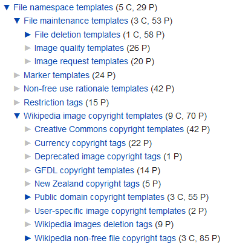
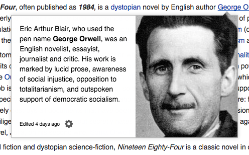

Extensões
Contents
Extensões#
Existe uma gama enorme de extensões para o MediaWiki, as quais é possível instalar na wiki, adicionando novas funcionalidades. Qualquer um pode desenvolver uma extensão para o MediaWiki, já que o objetivo central da ferramenta é ser aberta.
Para instalar uma extensão na sua wiki, basta:
ir na página da extensão;
baixar a extensão compactada;
descompactar o arquivo;
no diretório da wiki, colocar o conteúdo descompactado na pasta de extensões;
no arquivo de configuração da wiki, ativar a extensão;
no arquivo de configuração da wiki, definir as opções de configuração da extensão (caso necessário).
Muitas das extensões existentes estão classificadas por categoria, mas há várias que não estão categorizadas. Também pode-se encontrar várias extensões no Github. Dentre todas essas, algumas das mais importantes estão listadas e brevemente descritas abaixo.
VisualEditor#
A extensão VisualEditor introduz uma barra de ferramentas de formatação semelhante a que tem em programas de edição de texto como o Word. Assim, em vez de ser necessário decorar códigos de formatação do wikitext, basta usar os botões da barra de ferramentas.
CategoryTree#
A extensão CategoryTree possibilita o carregamento da estrutura de conteúdos da wiki inteira ou de uma parte da wiki no formato de uma árvore. Ou seja, ao colocar uma CategoryTree em uma página, é possível listar ali todos as subcategorias e artigos inseridos nessa categoria, bem como as subcategorias e artigos inseridos em cada uma das subcategorias.
Este é o exemplo que está na página da extensão:

Cite#
A extensão Cite inclui novos códigos ao wikitext para facilitar a inclusão de referências e notas de rodapé.
MobileFrontend#
A extensão MobileFrontend melhora a responsividade ao permitir, dentre outras coisas, que a wiki tenha uma skin para desktop e outra skin para mobile.
Popups#
A extensão Popups faz com que apareçam popups com uma prévia de um artigo ao se passar o mouse por um link para aquele artigo. Isto funciona somentes para artigos da mesma wiki.
Este é o exemplo que está na página da extensão:
